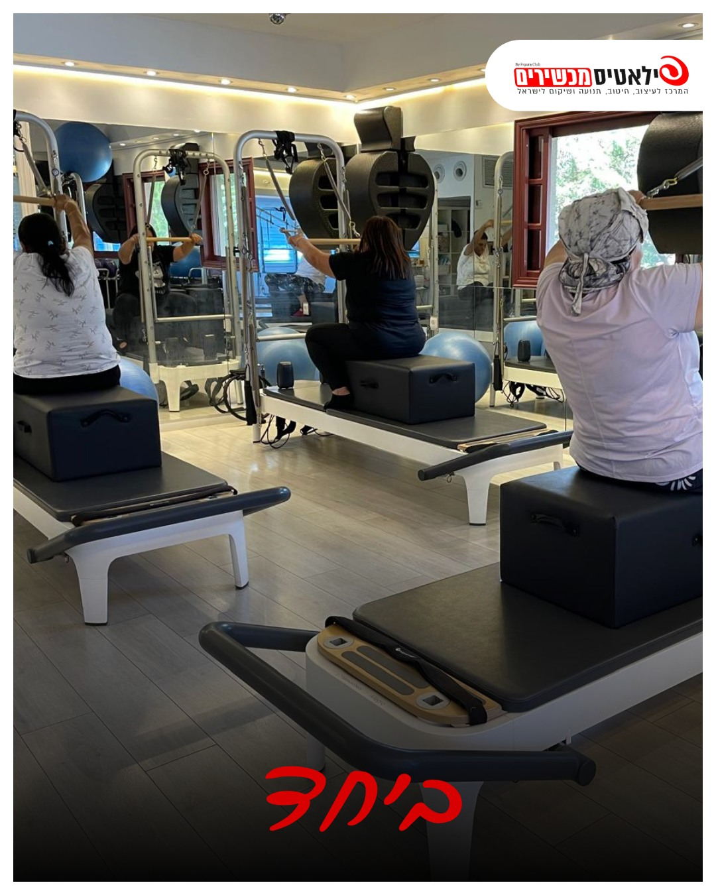

"לא זזתי שנים": איך מתחילים פילאטיס מכשירים אחרי גיל 60

את רוצה להתחיל.
אבל הגוף לא זז כבר שנים.
ומשהו בפנים אומר: "מאוחר מדי בשבילי".
אני מכירה את המשפט הזה.
אני שומעת אותו כמעט בכל שיחת טלפון ראשונה.
ומה שאני עונה, שוב ושוב:
הגוף שלך יודע ללמוד בכל גיל.
צריך רק להתחיל נכון.
למה קשה לחזור אחרי שנים בלי תנועה
- מגיל 30 אנחנו מאבדים מסת שריר בכל עשור, ואחרי גיל 60 זה מואץ.
- כשלא זזים, המפרקים מתקשחים, וכל תנועה נהיית מאמץ.
- שיווי המשקל נחלש בשקט, בלי שמרגישים.
- והראש: הפחד להיפגע, הבושה להיכנס למקום חדש, המחשבה ש"כולן שם כבר בכושר".
מה המחקרים אומרים
- שרירים מגיבים לאימון גם בגיל 80 ו-90. במחקרים על אנשים בגילים האלה, כמה שבועות של אימון כוח העלו את הכוח בצורה משמעותית.
- פילאטיס אצל אנשים מעל 60 משפר שיווי משקל, כוח וגמישות, ומקטין את הסיכון ליפול.
- ההמלצה של ארגון הבריאות העולמי: אימון כוח פעמיים בשבוע, בכל גיל.
למה דווקא מכשירים
על מזרן את עובדת נגד כל משקל הגוף שלך. זה יכול להיות קשה מדי בהתחלה.
על מכשיר הפילאטיס הקפיצים עובדים איתך.
הם תומכים כשצריך, ומוסיפים עומס כשאת מוכנה.
את שוכבת, יושבת, נתמכת.
ככה מתחילים לאט, בלי לקפוץ לתוך המים העמוקים.
שלושה צעדים להתחלה
1. מתחילים בפעמיים בשבוע
לא כל יום. פעמיים בשבוע, בימים קבועים ובשעות קבועות.
הגוף צריך זמן להתאושש בין אימון לאימון.
2. מודדים לפי איך את מרגישה, לא לפי מה שהשכנה עושה
באימון הראשון את עושה מה שהגוף שלך יכול.
כל אחת מתחילה מנקודה אחרת.
3. נותנים לזה חודש
השינוי הראשון מגיע בתחושה: קמה יותר בקלות, הגב פחות תפוס.
המראה מגיע אחר כך.
מתי הולכים קודם לרופא
- כאב בחזה, קוצר נשימה או סחרחורת במאמץ
- לחץ דם שלא מאוזן
- מחלת לב, או סוכרת שלא מאוזנת
- ניתוח בחודשים האחרונים
- כאב חד במפרק או בגב שלא עובר
אם יש לך אחד מאלה, זה לא אומר שאסור לך להתאמן.
זה אומר שמתחילים באישור, ובהתאמה.
מה עושים בסטודיו
באימון הראשון אני קודם כל מכירה אותך: מה כואב, מה עברת, מה את רוצה להשיג.
משם כל תרגיל מותאם לגוף שלך, ולמכשיר שמתאים לך.
והעומס עולה רק כשאת מוכנה.
אני התחלתי ללמוד להיות מאמנת בגיל 55.
היום אני מתאמנת על הטבעות בגיל 72.
ההתחלה שלך יכולה להיות כבר עכשיו.
השאירי פרטים ונחזור אלייך בהקדם